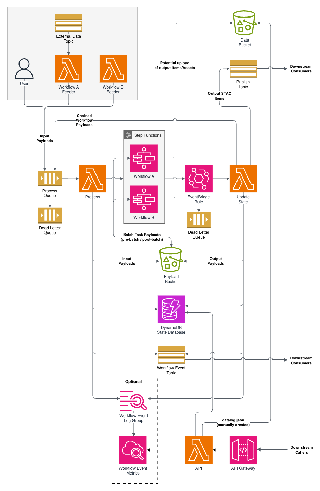

How Cirrus works¶
Work moves through Cirrus as payloads. A payload is a JSON document that holds STAC Items, names the workflow to run them through, and carries configuration for the workflow as a whole and for each task in it. You write the workflows, the tasks each workflow calls, and the code that builds payloads and sends them to a queue. Cirrus takes each payload from the queue, starts the workflow it names as a Step Functions execution, and tracks the payload's state in a DynamoDB table from claim to outcome. When an execution succeeds, Cirrus also stores the output payload in S3 and publishes each output item to an SNS topic. A STAC API ingest, a feeder for another pipeline, or any subscriber of your own picks the items up there.
The payload¶
A Cirrus Payload is a GeoJSON FeatureCollection with a process list added. Its features are the STAC Items to process. The first process entry names the workflow to run and carries that workflow's configuration: parameters shared by every task, parameters for individual tasks, and settings for how tasks upload the assets they produce. Further entries chain other workflows after this one. The schema page lists every field.
The payload's id combines the item collections, the workflow name, and the item IDs, as <collections>/workflow-<workflow>/<itemids>. The state database is keyed on it, so the same items sent to the same workflow again are a resubmission of a payload that already ran. Cirrus skips a resubmission unless the payload says to replace the earlier run.
The intent is STAC in, STAC out. Cirrus checks that the payload has the right structure, but it does not check the items themselves, and an input item needs only an id to be accepted. The output is stored and published as the last task returned it. Whether a pipeline produces STAC is up to its tasks.
Life of a payload¶
Below is the AWS architecture of a Cirrus deployment, drawn with two workflows. The numbered steps that follow trace one payload through it, naming each component as the payload reaches it.

- A feeder sends the payload to the process queue. Feeders are the grey box at the top left. The diagram shows two Lambda feeders, one of them subscribed to an external data topic, and a person submitting a payload by hand. Anything that can send a message to the queue is a feeder.
processtakes the payload off the queue, validates it, claims it in the state database, uploads it to the payload bucket, and starts an execution of the state machine the payload's workflow name selects, with the payload as input.- The state machine runs its tasks. Tasks are not drawn: they are the Lambda functions and Batch jobs inside each Step Functions box. Each task receives the payload the previous one returned. A Lambda task gets it as its event. A Batch job cannot, so
pre-batchwrites the payload to the payload bucket for the job to read andpost-batchreads the job's result back, which is the arrow labeled Batch task payloads. A task that produces assets can upload them to the data bucket and point its items at them, the dashed arrow at the top; nothing in Cirrus requires it. - When the execution ends, the EventBridge rule invokes
update-statewith the status, input, and output. It recordsSUCCEEDED,FAILED,INVALID, orABORTEDin the state database. On success it also stores the output payload in the payload bucket and publishes each output item to the publish topic. If the payload'sprocesslist has more entries, it builds the next payload and sends it back to the queue, the arrow labeled Chained workflow payloads.
The rest of the diagram is for watching the deployment. process and update-state announce each decision they make about a payload as a workflow event on the workflow event topic, and optionally to a CloudWatch log group whose metric filters turn the events into metrics. Two dead-letter queues catch what the functions could not handle: the process queue's for messages process failed on repeatedly, and update-state's for EventBridge events it could not process. The read-only api, behind API Gateway, serves the state database and the metrics over HTTP, and its root endpoint lists workflows from a catalog.json you place in the data bucket. Monitoring covers using these.
To build a task and workflow and watch a payload take this path, see Your first pipeline.
What you build and what Cirrus provides¶
The parts of the diagram specific to your pipeline are yours to write. The rest is the framework.
| You write | Cirrus provides |
|---|---|
| Feeders. Any code with permission to send to the process queue. | Queues. The process queue, its dead-letter queue, and a dead-letter queue for update-state. |
| Workflows. Step Functions state machines, one CloudFormation stack each. | process Lambda function. Takes payloads off the queue and starts executions. |
| Tasks. The Lambda functions and Batch jobs a workflow invokes. Each takes a payload and returns one. | update-state Lambda function. Invoked by the EventBridge rule when an execution ends. Records outcomes, stores output payloads, publishes items, and continues chains. |
pre-batch and post-batch Lambda functions. Pass a payload into and out of a Batch job through S3. |
|
| Storage. The state database, the payload bucket, and the data bucket. | |
| Topics. The publish topic and the workflow event topic. | |
api Lambda function. Read-only HTTP access to the state database and metrics, behind API Gateway. |
|
| Metrics. An optional CloudWatch log group and metric filters over workflow events. |
Cirrus asks three things of a workflow. Its state machine is named ${ResourcePrefix}-<workflow>, so that process can find it and update-state is invoked when it finishes. Its Fail state carries the failing task's error forward, so the state database records why. Its final output is the payload, since that is what update-state stores and publishes. Which tasks run, in what order, and with what retries is yours to decide.
Cirrus ships CloudFormation templates, in cloudformation/, that create everything in the right-hand column. They are not required. Each function reads the resources it needs from environment variables, so a deployment built with Terraform, AWS CDK, or hand-written templates works as long as it creates the same resources and sets the same variables. The Deployment contract specifies those resources and variables. Deploying to AWS is the procedure for the shipped templates.
Where to go next¶
- Quickstart runs the reference stack on LocalStack, and Deploying to AWS deploys it to an account.
- Building pipelines covers tasks, workflows, and feeders.
- Using the CLI and the Python library are the two ways to work with a deployment from outside AWS.